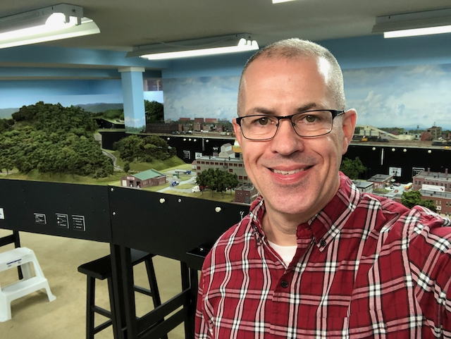

-

About Me
Like many in our hobby, my introduction to model trains came in the form of a train set when I was a kid. First was a Marx O-27 set when I was maybe 4 years old, then later a Tyco HO set when I was about 8 or 9. My grandparents lived in Pineville, KY, which is along the Cumberland River and with it, one of Louisville & Nashville’s (now CSX) routes into coal country. When I’d hear the horn blow, I would run to the end of the street, climb up onto the concrete flood wall, and watch all those hopper cars roll by on the far side of the river. Train sets were fun, but I think my interest in the hobby is rooted in those memories of being perched atop the flood wall in Pineville. Up until I was about 12, the only time I ever saw a model train run was on the living room carpet. On a trip to a lumber store with my Dad, I saw a 4’x4’ HO layout being raffled-off, complete with grass, trees, and buildings. As rudimentary as it was, I had never seen anything like it, and I was hooked! Over the next couple of months that followed, my Dad, not a model railroader himself, began to encourage my interest in model railroading. He took me to the home of one of his coworkers, who happened to be in the hobby, to see his layout. It was a 4’x8’ with a 4’x4’ extension forming an “L”, and it was the most elaborate thing I had ever seen – again! Until seeing these two layouts, I never knew there were possibilities for model trains beyond what I saw on the living room floor. Soon afterward, he built a 4’x8’ table for me to begin a layout of my own. After discovering cars and girls later in my teenage years, I took a hiatus from the hobby, but always maintained interest in it. While in college, I became enamored with the small size and space requirements of N-scale, and slow begin coming back to the hobby via N-scale. I returned to the hobby in earnest around 1999 and haven’t stopped. After building a couple of small N-scale layouts, I began building Free-MoN modules with some friends in 2008. These modules eventually became the basis of what is now my home layout that takes up a good portion of our basement. One of my favorite aspects of the hobby is social. Some of my closest friends I met via local clubs, our Division 8 meetings, and our shared interest in model trains. That social aspect is also my favorite part of having a larger layout – hosting “Train Night” where friends and fellow modelers get together to run trains, run ops, and enjoy the good-natured banter that friends share. The NMRA is like most organizations in that what you get out of it is largely up to the individual. The Achievement Program offers members one of the best opportunities around to advance one’s modeling skills. I’m a firm believer that the best cure for intimidation regarding model railroading is experience. While fulfilling some of the requirements for some AP awards occur more naturally while building a layout (wiring, scenery, etc.), others challenge us to go beyond the skills we might otherwise have pursued in their absence. With the plethora of model railroad products available in almost every scale, we may never feel the need for hand-laying turnouts and scratch-building freight cars, locomotives, or structures. However, in mastering these skills, even if only in the pursuit of an AP award or eventually MMR, we stretch our own abilities, develop new skills, and become more confident modelers for having had the experience. The benefit isn’t the AP awards themselves, it’s the experience we gain as modelers in the process of working toward them.